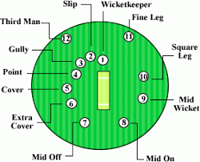

Cricket Rules:
Cricket is a game played with a bat and ball on a large field, known as a ground, between two teams of 11 players each. The object of the game is to score runs when at bat and to put out, or dismiss, the opposing batsmen when in the field. The cricket rules displayed on this page here are for the traditional form of cricket which is called “Test Cricket”. However there are other formats of the game eg. 50 over matches, Twenty20 Cricket etc where the rules differ slightly.
Player: Official Cricket Rules
Cricket is a game played between two teams made up of eleven players each. There is also a reserve player called a “twelfth man” who is used should a player be injured during play. The twelfth man is not allowed to bowl, bat, wicket keep or captain the team. His sole duty is to act as a substitute fielder. The original player is free to return to the game as soon as they have recovered from their injury. To apply the law and make sure the cricket rules are upheld throughout the game there are two umpires in place during games. Umpires are responsible for making decisions and notifying the scorers of these decisions. Two umpires are in place on the playing field while there is also a third umpire off the field who is in charge of video decisions. This is where the call is too close for the on field umpires and they refer it to the third umpire who reviews slow motion video replays to make a decision.
Game Structure
Test cricket is a game that spans over two innings. This means that one team needs to bowl the other team out twice and score more runs then them to win the match. Another key difference between test cricket and other forms of cricket is the length of the innings. In test cricket there is no limit to the innings length. Whereas in one day cricket & Twenty20 cricket there are a certain amount of overs per innings. The only limits in test cricket is a 5 day length. Before the game begins an official will toss a coin. The captain who guesses the correct side of the coin will then choose if they want to bat or field first. One team will then bat while the other will bowl & field. The aim of the batting team is to score runs while the aim of the fielding team is to bowl ten people out and close the batting teams’ innings. Although there are eleven people in each team only ten people need to be bowled out as you cannot have one person batting alone. Batting is done in pairs. Once the first team has been bowled out the second team would then go into bat. Once the second team is then bowled out it would normally return to the first team batting again. However there is an exception to this in the cricket rules, it is called the follow-on. The follow-on is when the first team makes at least 200 runs more than the second team made (in a 5 day test match). This then gives the first team the option to make the second team bat again. This is particularly useful if the game is progressing slowly or affected by bad weather and there might not be enough time for both teams to play a full innings. Should this be the case the batting team’s captain also has the right to forfeit their innings at any time. This is called a declaration. Some may wonder why a captain would forfeit the opportunity for his team to bat. However if the game is coming close to a close and it looks like they will not be able to bowl the other team out again this could be an option. If one team is not bowled out twice and a winner determined in the five days of play the game is declared a draw. Therefore it may be worth declaring an innings to creat the possibility of a win rather than a draw.
Ways to score runs
The aim of the batsmen is to score runs. One of the main cricket rules is that for batsmen to score runs they must run to each other’s end of the pitch (from one end to the other). In doing this one run is scored. Cricket rules state they may run multiple runs per shot. As well as running they can also score runs by hitting boundaries. A boundary scores the batsmen either 4 or 6 runs. A four is scored by hitting the ball past the boundary after hitting the ground while a six is scored by hitting the ball past the boundary on the full (before it hits the ground). Cricket rules also state that once a 4 or 6 has been scored any runs physically ran by the batsman are null & void. They will only obtain the 4 or 6 runs.
Other ways runs can be scored according to the cricket rules include no balls, wide balls, byes & leg byes. Cricket rules state that all runs scored by these methods are awarded to the batting team but not the individual batters.
A “No Ball” can be declared for many reasons: If the bowler bowls the ball from the wrong place, the ball is declared dangerous (often happens when bowled at the batsmen’s body on the full), bounces more than twice or rolls before reaching the batsman or if fielders are standing in illegal positions. The batsman can hit a no ball and score runs off it but cannot be out from a no ball except if they are ran out, hit the ball twice, handle the ball or obstruct the field. The batsman gains any runs scored off the no ball for his shot while the team also gains one run for the no ball itself.
A “Wide Ball” will be declared if the umpire thinks the batsman did not have a reasonable opportunity to score off the delivery. However if the delivery is bowled over the batsmen’s head it will not be declared a wide but a no ball. Umpires are much stricter on wide deliveries in the shorter format of the game while being much more relaxed in test cricket. A wide delivery will add one run to the batting team and any runs scored by the batsman. The batsman is not able to get out off a wide delivery except if they are stumped, run out, handle the ball, hit their wicket or obstruct the field.
A “Bye” is where a ball that isn’t a no ball or wide passes the striking batsman and runs are scored without the batsman hitting the ball.
A “Leg Bye” is where runs are scored by hitting the batsman, but not the bat and the ball is not a no ball or wide. However no runs can be scored if the striking batsman didn’t attempt to play a shot or if he was avoiding the ball.
Ways Batsmen can be given out according to cricket rules
There are a number of different ways a batsman can be given out in the game of cricket. When a bowler gets a batsman out it is said that the bowler gets a “wicket”. Following are the different ways a batsman can be given out according to the rules of cricket:
Bowled – Cricket rules state that if the ball is bowled and hits the striking batsman’s wickets the batsman is given out (as long as at least one bail is removed by the ball). It does not matter whether the ball has touched the batsman’s bat, gloves, body or any other part of the batsman. However the ball is not allowed to have touched another player or umpire before hitting the wickets.
Caught – Cricket rules state that if a batsman hits the ball or touches the ball at all with his bat or hand/glove holding the bat then the batsman can be caught out. This is done by the fielders, wicket keeper or bowler catching the ball on the full (before it bounces). If this is done then cricket rules state the batsman is out.
Leg Before Wicket (LBW) – If the ball is bowled and it hits the batsman first without the bat hitting it then an LBW decision is possible. However for the umpire to give this out he must first look at some of the factors stated in the cricket rules. The first thing the umpire need to decide is would the ball have hit the wickets if the batsman was not there. If his answer to this is yes and the ball was not pitched on the leg side of the wicket he can safely give the batsman out. However if the ball hits the batsman outside the line of off stump while he was attempting to play a stroke then he is not out.
Stumped – A batsman can be given out according to cricket rules when the wicketkeeper puts down his wicket while he is out of his crease and not attempting a run (if he is attempting a run it would be a runout).
Run Out – Cricket rules state that a batsman is out if no part of his bat or body is grounded behind the popping crease while the ball is in play and the wicket is fairly put down by the fielding side.
Hit Wicket – Cricket rules specify that if a batsman hits his wicket down with his bat or body after the bowler has entered his delivery stried and the ball is in play then he is out. The striking batsman is also out if he hits his wicket down while setting off for his first run.
Handled The Ball – Cricket rules allow the batsman to be given out if he willingly handles the ball with the hand that is not touching the bat without the consent of the opposition.
Timed Out – An incoming batsman must be ready to face a ball or be at the non strikers end with his partner within three minutes of the outgoing batsman being dismissed. If this is not done the incoming batsman can be given out.
Hit The Ball Twice – Cricket rules state that if a batsman hits a ball twice other than for the purpose of protecting his wicket or with consent from the opposition he is out.
Obstructing The Field – A batsman is out if he willingly obstructs the opposition by word or action
There are many other cricket rules. However these are most of the basics and will get you well on your way to playing the game. Many of the more advanced rules & laws can be learned along the way and are not vital to general play.